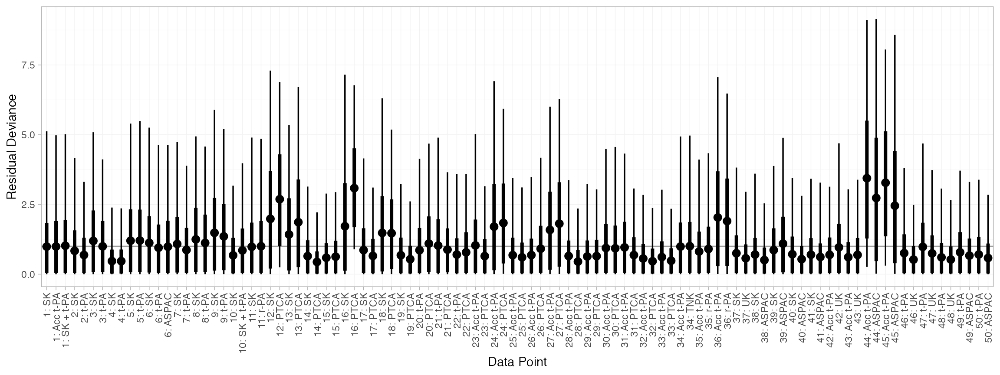
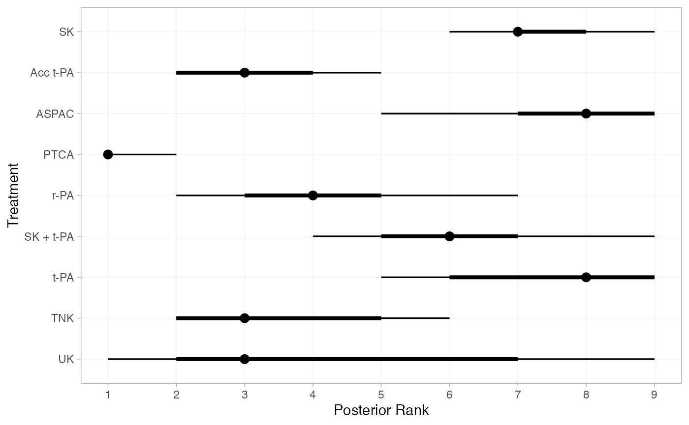

Example: Thrombolytic treatments
Source:vignettes/example_thrombolytics.Rmd
example_thrombolytics.Rmd
library(multinma)
options(mc.cores = parallel::detectCores())#> For execution on a local, multicore CPU with excess RAM we recommend calling
#> options(mc.cores = parallel::detectCores())
#>
#> Attaching package: 'multinma'
#> The following objects are masked from 'package:stats':
#>
#> dgamma, pgamma, qgammaThis vignette describes the analysis of 50 trials of 8 thrombolytic
drugs (streptokinase, SK; alteplase, t-PA; accelerated alteplase, Acc
t-PA; streptokinase plus alteplase, SK+tPA; reteplase, r-PA;
tenocteplase, TNK; urokinase, UK; anistreptilase, ASPAC) plus
per-cutaneous transluminal coronary angioplasty (PTCA) (Boland et al. 2003; Lu and Ades 2006; Dias et al.
2011, 2010). The number of deaths
in 30 or 35 days following acute myocardial infarction are recorded. The
data are available in this package as thrombolytics:
head(thrombolytics)
#> studyn trtn trtc r n
#> 1 1 1 SK 1472 20251
#> 2 1 3 Acc t-PA 652 10396
#> 3 1 4 SK + t-PA 723 10374
#> 4 2 1 SK 9 130
#> 5 2 2 t-PA 6 123
#> 6 3 1 SK 5 63Setting up the network
We begin by setting up the network. We have arm-level count data
giving the number of deaths (r) out of the total
(n) in each arm, so we use the function
set_agd_arm(). By default, SK is set as the network
reference treatment.
thrombo_net <- set_agd_arm(thrombolytics,
study = studyn,
trt = trtc,
r = r,
n = n)
thrombo_net
#> A network with 50 AgD studies (arm-based).
#>
#> ------------------------------------------------------- AgD studies (arm-based) ----
#> Study Treatment arms
#> 1 3: SK | Acc t-PA | SK + t-PA
#> 2 2: SK | t-PA
#> 3 2: SK | t-PA
#> 4 2: SK | t-PA
#> 5 2: SK | t-PA
#> 6 3: SK | ASPAC | t-PA
#> 7 2: SK | t-PA
#> 8 2: SK | t-PA
#> 9 2: SK | t-PA
#> 10 2: SK | SK + t-PA
#> ... plus 40 more studies
#>
#> Outcome type: count
#> ------------------------------------------------------------------------------------
#> Total number of treatments: 9
#> Total number of studies: 50
#> Reference treatment is: SK
#> Network is connectedPlot the network structure.
plot(thrombo_net, weight_edges = TRUE, weight_nodes = TRUE)Fixed effects NMA
Following TSD 4 (Dias et
al. 2011), we fit a fixed effects NMA model, using the
nma() function with trt_effects = "fixed". We
use
prior distributions for the treatment effects
and study-specific intercepts
.
We can examine the range of parameter values implied by these prior
distributions with the summary() method:
summary(normal(scale = 100))
#> A Normal prior distribution: location = 0, scale = 100.
#> 50% of the prior density lies between -67.45 and 67.45.
#> 95% of the prior density lies between -196 and 196.The model is fitted using the nma() function. By
default, this will use a Binomial likelihood and a logit link function,
auto-detected from the data.
thrombo_fit <- nma(thrombo_net,
trt_effects = "fixed",
prior_intercept = normal(scale = 100),
prior_trt = normal(scale = 100))
#> Note: Setting "SK" as the network reference treatment.Basic parameter summaries are given by the print()
method:
thrombo_fit
#> A fixed effects NMA with a binomial likelihood (logit link).
#> Inference for Stan model: binomial_1par.
#> 4 chains, each with iter=2000; warmup=1000; thin=1;
#> post-warmup draws per chain=1000, total post-warmup draws=4000.
#>
#> mean se_mean sd 2.5% 25% 50% 75% 97.5% n_eff
#> d[Acc t-PA] -0.18 0.00 0.04 -0.26 -0.21 -0.18 -0.15 -0.09 2282
#> d[ASPAC] 0.02 0.00 0.04 -0.06 -0.01 0.02 0.04 0.09 6274
#> d[PTCA] -0.48 0.00 0.10 -0.68 -0.54 -0.48 -0.41 -0.29 3674
#> d[r-PA] -0.12 0.00 0.06 -0.24 -0.16 -0.12 -0.08 -0.01 3136
#> d[SK + t-PA] -0.05 0.00 0.05 -0.14 -0.08 -0.05 -0.02 0.04 4511
#> d[t-PA] 0.00 0.00 0.03 -0.05 -0.02 0.00 0.02 0.06 4702
#> d[TNK] -0.17 0.00 0.08 -0.33 -0.23 -0.17 -0.12 -0.02 3049
#> d[UK] -0.20 0.00 0.22 -0.62 -0.35 -0.20 -0.05 0.24 4542
#> lp__ -43042.86 0.14 5.45 -43054.42 -43046.43 -43042.59 -43038.91 -43033.24 1459
#> Rhat
#> d[Acc t-PA] 1
#> d[ASPAC] 1
#> d[PTCA] 1
#> d[r-PA] 1
#> d[SK + t-PA] 1
#> d[t-PA] 1
#> d[TNK] 1
#> d[UK] 1
#> lp__ 1
#>
#> Samples were drawn using NUTS(diag_e) at Fri Feb 21 11:25:36 2025.
#> For each parameter, n_eff is a crude measure of effective sample size,
#> and Rhat is the potential scale reduction factor on split chains (at
#> convergence, Rhat=1).By default, summaries of the study-specific intercepts
are hidden, but could be examined by changing the pars
argument:
The prior and posterior distributions can be compared visually using
the plot_prior_posterior() function:
plot_prior_posterior(thrombo_fit, prior = "trt")
Model fit can be checked using the dic() function
(dic_consistency <- dic(thrombo_fit))
#> Residual deviance: 105.9 (on 102 data points)
#> pD: 58.7
#> DIC: 164.6and the residual deviance contributions examined with the
corresponding plot() method.
plot(dic_consistency)
There are a number of points which are not very well fit by the model, having posterior mean residual deviance contributions greater than 1.
Checking for inconsistency
Note: The results of the inconsistency models here are slightly different to those of Dias et al. (2010, 2011), although the overall conclusions are the same. This is due to the presence of multi-arm trials and a different ordering of treatments, meaning that inconsistency is parameterised differently within the multi-arm trials. The same results as Dias et al. are obtained if the network is instead set up with
trtnas the treatment variable.
Unrelated mean effects model
We first fit an unrelated mean effects (UME) model (Dias et al. 2011) to
assess the consistency assumption. Again, we use the function
nma(), but now with the argument
consistency = "ume".
thrombo_fit_ume <- nma(thrombo_net,
consistency = "ume",
trt_effects = "fixed",
prior_intercept = normal(scale = 100),
prior_trt = normal(scale = 100))
#> Note: Setting "SK" as the network reference treatment.
thrombo_fit_ume
#> vs. Acc t-PA] 1.41 0.01 0.42 0.62 1.12 1.39 1.69 2.23
#> d[PTCA vs. Acc t-PA] -0.21 0.00 0.12 -0.44 -0.29 -0.22 -0.13 0.01
#> d[r-PA vs. Acc t-PA] 0.02 0.00 0.07 -0.11 -0.03 0.02 0.06 0.16
#> d[TNK vs. Acc t-PA] 0.00 0.00 0.06 -0.12 -0.04 0.01 0.05 0.13
#> d[UK vs. Acc t-PA] 0.15 0.01 0.35 -0.53 -0.09 0.15 0.38 0.84
#> d[t-PA vs. ASPAC] 0.29 0.01 0.36 -0.41 0.06 0.29 0.53 1.02
#> d[t-PA vs. PTCA] 0.54 0.01 0.41 -0.25 0.26 0.53 0.82 1.36
#> d[UK vs. t-PA] -0.30 0.01 0.34 -0.98 -0.52 -0.29 -0.07 0.38
#> lp__ -43039.71 0.14 5.73 -43051.68 -43043.41 -43039.38 -43035.70 -43029.33
#> n_eff Rhat
#> d[Acc t-PA vs. SK] 4922 1
#> d[ASPAC vs. SK] 4156 1
#> d[PTCA vs. SK] 4903 1
#> d[r-PA vs. SK] 5564 1
#> d[SK + t-PA vs. SK] 5284 1
#> d[t-PA vs. SK] 3442 1
#> d[UK vs. SK] 4330 1
#> d[ASPAC vs. Acc t-PA] 3406 1
#> d[PTCA vs. Acc t-PA] 4038 1
#> d[r-PA vs. Acc t-PA] 4655 1
#> d[TNK vs. Acc t-PA] 5642 1
#> d[UK vs. Acc t-PA] 4389 1
#> d[t-PA vs. ASPAC] 3816 1
#> d[t-PA vs. PTCA] 3505 1
#> d[UK vs. t-PA] 4645 1
#> lp__ 1655 1
#>
#> Samples were drawn using NUTS(diag_e) at Fri Feb 21 11:25:43 2025.
#> For each parameter, n_eff is a crude measure of effective sample size,
#> and Rhat is the potential scale reduction factor on split chains (at
#> convergence, Rhat=1).Comparing the model fit statistics
dic_consistency
#> Residual deviance: 105.9 (on 102 data points)
#> pD: 58.7
#> DIC: 164.6
(dic_ume <- dic(thrombo_fit_ume))
#> Residual deviance: 99.6 (on 102 data points)
#> pD: 65.9
#> DIC: 165.4Whilst the UME model fits the data better, having a lower residual
deviance, the additional parameters in the UME model mean that the DIC
is very similar between both models. However, it is also important to
examine the individual contributions to model fit of each data point
under the two models (a so-called “dev-dev” plot). Passing two
nma_dic objects produced by the dic() function
to the plot() method produces this dev-dev plot:
plot(dic_consistency, dic_ume, show_uncertainty = FALSE)The four points lying in the lower right corner of the plot have much lower posterior mean residual deviance under the UME model, indicating that these data are potentially inconsistent. These points correspond to trials 44 and 45, the only two trials comparing Acc t-PA to ASPAC. The ASPAC vs. Acc t-PA estimates are very different under the consistency model and inconsistency (UME) model, suggesting that these two trials may be systematically different from the others in the network.
Node-splitting
Another method for assessing inconsistency is node-splitting (Dias et al. 2011, 2010). Whereas the UME model assesses inconsistency globally, node-splitting assesses inconsistency locally for each potentially inconsistent comparison (those with both direct and indirect evidence) in turn.
Node-splitting can be performed using the nma() function
with the argument consistency = "nodesplit". By default,
all possible comparisons will be split (as determined by the
get_nodesplits() function). Alternatively, a specific
comparison or comparisons to split can be provided to the
nodesplit argument.
thrombo_nodesplit <- nma(thrombo_net,
consistency = "nodesplit",
trt_effects = "fixed",
prior_intercept = normal(scale = 100),
prior_trt = normal(scale = 100))
#> Fitting model 1 of 15, node-split: Acc t-PA vs. SK
#> Note: Setting "SK" as the network reference treatment.
#> Fitting model 2 of 15, node-split: ASPAC vs. SK
#> Note: Setting "SK" as the network reference treatment.
#> Fitting model 3 of 15, node-split: PTCA vs. SK
#> Note: Setting "SK" as the network reference treatment.
#> Fitting model 4 of 15, node-split: r-PA vs. SK
#> Note: Setting "SK" as the network reference treatment.
#> Fitting model 5 of 15, node-split: t-PA vs. SK
#> Note: Setting "SK" as the network reference treatment.
#> Fitting model 6 of 15, node-split: UK vs. SK
#> Note: Setting "SK" as the network reference treatment.
#> Fitting model 7 of 15, node-split: ASPAC vs. Acc t-PA
#> Note: Setting "SK" as the network reference treatment.
#> Fitting model 8 of 15, node-split: PTCA vs. Acc t-PA
#> Note: Setting "SK" as the network reference treatment.
#> Fitting model 9 of 15, node-split: r-PA vs. Acc t-PA
#> Note: Setting "SK" as the network reference treatment.
#> Fitting model 10 of 15, node-split: SK + t-PA vs. Acc t-PA
#> Note: Setting "SK" as the network reference treatment.
#> Fitting model 11 of 15, node-split: UK vs. Acc t-PA
#> Note: Setting "SK" as the network reference treatment.
#> Fitting model 12 of 15, node-split: t-PA vs. ASPAC
#> Note: Setting "SK" as the network reference treatment.
#> Fitting model 13 of 15, node-split: t-PA vs. PTCA
#> Note: Setting "SK" as the network reference treatment.
#> Fitting model 14 of 15, node-split: UK vs. t-PA
#> Note: Setting "SK" as the network reference treatment.
#> Fitting model 15 of 15, consistency model
#> Note: Setting "SK" as the network reference treatment.The summary() method summarises the node-splitting
results, displaying the direct and indirect estimates
and
from each node-split model, the network estimate
from the consistency model, the inconsistency factor
,
and a Bayesian
-value
for inconsistency on each comparison. The DIC model fit statistics are
also provided. (If a random effects model was fitted, the heterogeneity
standard deviation
under each node-split model and under the consistency model would also
be displayed.)
summary(thrombo_nodesplit)
#> Node-splitting models fitted for 14 comparisons.
#>
#> ---------------------------------------------------- Node-split Acc t-PA vs. SK ----
#>
#> mean sd 2.5% 25% 50% 75% 97.5% Bulk_ESS Tail_ESS Rhat
#> d_net -0.18 0.04 -0.26 -0.21 -0.18 -0.15 -0.09 2829 3285 1
#> d_dir -0.16 0.05 -0.25 -0.19 -0.16 -0.12 -0.06 3611 3629 1
#> d_ind -0.25 0.09 -0.42 -0.31 -0.25 -0.18 -0.06 781 1281 1
#> omega 0.09 0.10 -0.12 0.02 0.09 0.16 0.29 897 1821 1
#>
#> Residual deviance: 106.1 (on 102 data points)
#> pD: 59.7
#> DIC: 165.8
#>
#> Bayesian p-value: 0.39
#>
#> ------------------------------------------------------- Node-split ASPAC vs. SK ----
#>
#> mean sd 2.5% 25% 50% 75% 97.5% Bulk_ESS Tail_ESS Rhat
#> d_net 0.02 0.04 -0.06 -0.01 0.02 0.04 0.09 4921 3272 1
#> d_dir 0.01 0.04 -0.06 -0.02 0.01 0.03 0.08 4413 3279 1
#> d_ind 0.43 0.26 -0.06 0.26 0.43 0.61 0.93 2412 2650 1
#> omega -0.42 0.26 -0.93 -0.60 -0.42 -0.25 0.07 2466 2237 1
#>
#> Residual deviance: 104.6 (on 102 data points)
#> pD: 60.1
#> DIC: 164.7
#>
#> Bayesian p-value: 0.096
#>
#> -------------------------------------------------------- Node-split PTCA vs. SK ----
#>
#> mean sd 2.5% 25% 50% 75% 97.5% Bulk_ESS Tail_ESS Rhat
#> d_net -0.47 0.10 -0.68 -0.54 -0.47 -0.40 -0.28 4278 3561 1
#> d_dir -0.66 0.19 -1.03 -0.78 -0.66 -0.54 -0.30 5008 3177 1
#> d_ind -0.39 0.12 -0.62 -0.47 -0.39 -0.31 -0.16 3479 3476 1
#> omega -0.27 0.22 -0.72 -0.42 -0.27 -0.12 0.15 4281 3302 1
#>
#> Residual deviance: 105.5 (on 102 data points)
#> pD: 59.8
#> DIC: 165.3
#>
#> Bayesian p-value: 0.23
#>
#> -------------------------------------------------------- Node-split r-PA vs. SK ----
#>
#> mean sd 2.5% 25% 50% 75% 97.5% Bulk_ESS Tail_ESS Rhat
#> d_net -0.12 0.06 -0.24 -0.16 -0.12 -0.08 0.00 3934 3728 1
#> d_dir -0.06 0.09 -0.23 -0.12 -0.06 0.00 0.11 5317 3758 1
#> d_ind -0.18 0.08 -0.34 -0.23 -0.18 -0.13 -0.02 2616 2797 1
#> omega 0.12 0.12 -0.11 0.04 0.12 0.20 0.35 3166 3404 1
#>
#> Residual deviance: 105.8 (on 102 data points)
#> pD: 59.5
#> DIC: 165.3
#>
#> Bayesian p-value: 0.3
#>
#> -------------------------------------------------------- Node-split t-PA vs. SK ----
#>
#> mean sd 2.5% 25% 50% 75% 97.5% Bulk_ESS Tail_ESS Rhat
#> d_net 0.00 0.03 -0.06 -0.02 0.0 0.02 0.06 4247 3428 1
#> d_dir 0.00 0.03 -0.06 -0.02 0.0 0.02 0.06 3766 3236 1
#> d_ind 0.20 0.24 -0.28 0.03 0.2 0.36 0.67 1188 1674 1
#> omega -0.19 0.24 -0.67 -0.36 -0.2 -0.03 0.28 1192 1627 1
#>
#> Residual deviance: 106.1 (on 102 data points)
#> pD: 59.5
#> DIC: 165.6
#>
#> Bayesian p-value: 0.42
#>
#> ---------------------------------------------------------- Node-split UK vs. SK ----
#>
#> mean sd 2.5% 25% 50% 75% 97.5% Bulk_ESS Tail_ESS Rhat
#> d_net -0.20 0.22 -0.63 -0.35 -0.20 -0.05 0.23 5086 3492 1
#> d_dir -0.37 0.53 -1.45 -0.71 -0.36 -0.02 0.64 5967 3383 1
#> d_ind -0.16 0.25 -0.64 -0.34 -0.17 0.00 0.33 4475 3188 1
#> omega -0.21 0.59 -1.39 -0.60 -0.18 0.19 0.90 5313 3072 1
#>
#> Residual deviance: 107.1 (on 102 data points)
#> pD: 60
#> DIC: 167.1
#>
#> Bayesian p-value: 0.75
#>
#> ------------------------------------------------- Node-split ASPAC vs. Acc t-PA ----
#>
#> mean sd 2.5% 25% 50% 75% 97.5% Bulk_ESS Tail_ESS Rhat
#> d_net 0.19 0.06 0.08 0.15 0.19 0.23 0.30 3578 3457 1
#> d_dir 1.41 0.42 0.63 1.12 1.40 1.68 2.29 3819 2946 1
#> d_ind 0.16 0.06 0.05 0.13 0.16 0.20 0.28 2801 2977 1
#> omega 1.25 0.42 0.44 0.95 1.23 1.52 2.15 3567 3100 1
#>
#> Residual deviance: 96.6 (on 102 data points)
#> pD: 59.4
#> DIC: 156
#>
#> Bayesian p-value: <0.01
#>
#> -------------------------------------------------- Node-split PTCA vs. Acc t-PA ----
#>
#> mean sd 2.5% 25% 50% 75% 97.5% Bulk_ESS Tail_ESS Rhat
#> d_net -0.30 0.10 -0.49 -0.36 -0.30 -0.23 -0.10 5146 3648 1
#> d_dir -0.22 0.12 -0.46 -0.30 -0.22 -0.14 0.01 4205 3251 1
#> d_ind -0.47 0.17 -0.82 -0.59 -0.47 -0.36 -0.12 2983 2689 1
#> omega 0.25 0.21 -0.16 0.11 0.25 0.39 0.67 2791 2653 1
#>
#> Residual deviance: 105.3 (on 102 data points)
#> pD: 59.7
#> DIC: 165
#>
#> Bayesian p-value: 0.22
#>
#> -------------------------------------------------- Node-split r-PA vs. Acc t-PA ----
#>
#> mean sd 2.5% 25% 50% 75% 97.5% Bulk_ESS Tail_ESS Rhat
#> d_net 0.05 0.06 -0.05 0.02 0.05 0.09 0.17 6384 3753 1
#> d_dir 0.02 0.07 -0.11 -0.02 0.02 0.07 0.15 5499 3773 1
#> d_ind 0.14 0.10 -0.06 0.07 0.14 0.21 0.34 2200 2558 1
#> omega -0.12 0.12 -0.35 -0.20 -0.11 -0.03 0.12 2284 2744 1
#>
#> Residual deviance: 106 (on 102 data points)
#> pD: 59.7
#> DIC: 165.7
#>
#> Bayesian p-value: 0.33
#>
#> --------------------------------------------- Node-split SK + t-PA vs. Acc t-PA ----
#>
#> mean sd 2.5% 25% 50% 75% 97.5% Bulk_ESS Tail_ESS Rhat
#> d_net 0.13 0.05 0.02 0.09 0.13 0.16 0.23 5546 3319 1
#> d_dir 0.13 0.05 0.02 0.09 0.13 0.16 0.23 3859 3320 1
#> d_ind 0.64 0.70 -0.66 0.16 0.61 1.08 2.09 3244 2285 1
#> omega -0.51 0.70 -1.96 -0.95 -0.49 -0.03 0.81 3266 2399 1
#>
#> Residual deviance: 106.6 (on 102 data points)
#> pD: 59.9
#> DIC: 166.6
#>
#> Bayesian p-value: 0.46
#>
#> ---------------------------------------------------- Node-split UK vs. Acc t-PA ----
#>
#> mean sd 2.5% 25% 50% 75% 97.5% Bulk_ESS Tail_ESS Rhat
#> d_net -0.02 0.22 -0.45 -0.18 -0.03 0.13 0.41 5173 3586 1
#> d_dir 0.14 0.36 -0.55 -0.10 0.14 0.38 0.86 5105 3461 1
#> d_ind -0.13 0.29 -0.71 -0.32 -0.13 0.07 0.42 4119 2829 1
#> omega 0.27 0.46 -0.60 -0.04 0.27 0.58 1.21 3884 2684 1
#>
#> Residual deviance: 106.7 (on 102 data points)
#> pD: 59.8
#> DIC: 166.5
#>
#> Bayesian p-value: 0.55
#>
#> ----------------------------------------------------- Node-split t-PA vs. ASPAC ----
#>
#> mean sd 2.5% 25% 50% 75% 97.5% Bulk_ESS Tail_ESS Rhat
#> d_net -0.01 0.04 -0.08 -0.04 -0.01 0.01 0.06 6939 3338 1
#> d_dir -0.02 0.04 -0.10 -0.05 -0.02 0.00 0.05 4488 3651 1
#> d_ind 0.03 0.06 -0.09 -0.01 0.03 0.07 0.15 3471 3236 1
#> omega -0.05 0.06 -0.17 -0.09 -0.05 -0.01 0.07 3519 3264 1
#>
#> Residual deviance: 106.6 (on 102 data points)
#> pD: 60
#> DIC: 166.6
#>
#> Bayesian p-value: 0.42
#>
#> ------------------------------------------------------ Node-split t-PA vs. PTCA ----
#>
#> mean sd 2.5% 25% 50% 75% 97.5% Bulk_ESS Tail_ESS Rhat
#> d_net 0.48 0.11 0.27 0.40 0.48 0.55 0.69 4341 3407 1
#> d_dir 0.53 0.41 -0.22 0.25 0.53 0.80 1.36 4940 3163 1
#> d_ind 0.48 0.11 0.27 0.40 0.48 0.55 0.69 4014 3519 1
#> omega 0.06 0.43 -0.75 -0.24 0.05 0.34 0.90 4453 3145 1
#>
#> Residual deviance: 106.6 (on 102 data points)
#> pD: 59.4
#> DIC: 166
#>
#> Bayesian p-value: 0.9
#>
#> -------------------------------------------------------- Node-split UK vs. t-PA ----
#>
#> mean sd 2.5% 25% 50% 75% 97.5% Bulk_ESS Tail_ESS Rhat
#> d_net -0.20 0.22 -0.64 -0.36 -0.21 -0.06 0.23 5258 3628 1
#> d_dir -0.30 0.35 -0.98 -0.53 -0.29 -0.07 0.37 4838 3525 1
#> d_ind -0.14 0.29 -0.70 -0.33 -0.15 0.05 0.43 3982 3187 1
#> omega -0.16 0.45 -1.03 -0.47 -0.15 0.14 0.75 4112 3155 1
#>
#> Residual deviance: 106.7 (on 102 data points)
#> pD: 59.6
#> DIC: 166.3
#>
#> Bayesian p-value: 0.72Node-splitting the ASPAC vs. Acc t-PA comparison results the lowest DIC, and this is lower than the consistency model. The posterior distribution for the inconsistency factor for this comparison lies far from 0 and the Bayesian -value for inconsistency is small (< 0.01), meaning that there is substantial disagreement between the direct and indirect evidence on this comparison.
We can visually compare the direct, indirect, and network estimates
using the plot() method.
plot(thrombo_nodesplit)We can also plot the posterior distributions of the inconsistency
factors
,
again using the plot() method. Here, we specify a “halfeye”
plot of the posterior density with median and credible intervals, and
customise the plot layout with standard ggplot2
functions.
plot(thrombo_nodesplit, pars = "omega", stat = "halfeye", ref_line = 0) +
ggplot2::aes(y = comparison) +
ggplot2::facet_null()
Notice again that the posterior distribution of the inconsistency factor for the ASPAC vs. Acc t-PA comparison lies far from 0, indicating substantial inconsistency between the direct and indirect evidence on this comparison.
Further results
Relative effects for all pairwise contrasts between treatments can be
produced using the relative_effects() function, with
all_contrasts = TRUE.
(thrombo_releff <- relative_effects(thrombo_fit, all_contrasts = TRUE))
#> mean sd 2.5% 25% 50% 75% 97.5% Bulk_ESS Tail_ESS Rhat
#> d[Acc t-PA vs. SK] -0.18 0.04 -0.26 -0.21 -0.18 -0.15 -0.09 2297 2890 1
#> d[ASPAC vs. SK] 0.02 0.04 -0.06 -0.01 0.02 0.04 0.09 6306 3122 1
#> d[PTCA vs. SK] -0.48 0.10 -0.68 -0.54 -0.48 -0.41 -0.29 3707 2941 1
#> d[r-PA vs. SK] -0.12 0.06 -0.24 -0.16 -0.12 -0.08 -0.01 3155 3054 1
#> d[SK + t-PA vs. SK] -0.05 0.05 -0.14 -0.08 -0.05 -0.02 0.04 4626 3134 1
#> d[t-PA vs. SK] 0.00 0.03 -0.05 -0.02 0.00 0.02 0.06 4738 3740 1
#> d[TNK vs. SK] -0.17 0.08 -0.33 -0.23 -0.17 -0.12 -0.02 3102 3056 1
#> d[UK vs. SK] -0.20 0.22 -0.62 -0.35 -0.20 -0.05 0.24 4587 3185 1
#> d[ASPAC vs. Acc t-PA] 0.19 0.06 0.08 0.16 0.19 0.23 0.30 2991 3249 1
#> d[PTCA vs. Acc t-PA] -0.30 0.10 -0.50 -0.37 -0.30 -0.23 -0.11 5470 3119 1
#> d[r-PA vs. Acc t-PA] 0.05 0.05 -0.05 0.02 0.05 0.09 0.16 5337 3122 1
#> d[SK + t-PA vs. Acc t-PA] 0.13 0.05 0.02 0.09 0.13 0.16 0.23 5625 3490 1
#> d[t-PA vs. Acc t-PA] 0.18 0.05 0.07 0.14 0.18 0.22 0.29 2778 3132 1
#> d[TNK vs. Acc t-PA] 0.00 0.06 -0.13 -0.04 0.01 0.05 0.13 5569 3440 1
#> d[UK vs. Acc t-PA] -0.02 0.22 -0.45 -0.18 -0.02 0.12 0.42 4777 3139 1
#> d[PTCA vs. ASPAC] -0.49 0.11 -0.71 -0.56 -0.49 -0.42 -0.29 3813 2868 1
#> d[r-PA vs. ASPAC] -0.14 0.07 -0.28 -0.19 -0.14 -0.09 0.00 3739 3517 1
#> d[SK + t-PA vs. ASPAC] -0.07 0.06 -0.18 -0.11 -0.07 -0.03 0.05 5913 3605 1
#> d[t-PA vs. ASPAC] -0.01 0.04 -0.09 -0.04 -0.01 0.01 0.06 8004 3118 1
#> d[TNK vs. ASPAC] -0.19 0.09 -0.36 -0.25 -0.19 -0.13 -0.02 3388 3468 1
#> d[UK vs. ASPAC] -0.22 0.22 -0.66 -0.37 -0.22 -0.07 0.23 4701 3155 1
#> d[r-PA vs. PTCA] 0.35 0.11 0.14 0.28 0.35 0.43 0.57 5165 3169 1
#> d[SK + t-PA vs. PTCA] 0.43 0.11 0.22 0.36 0.43 0.50 0.64 5069 3705 1
#> d[t-PA vs. PTCA] 0.48 0.10 0.28 0.41 0.48 0.55 0.69 3723 2692 1
#> d[TNK vs. PTCA] 0.30 0.12 0.08 0.23 0.31 0.38 0.53 5869 3409 1
#> d[UK vs. PTCA] 0.28 0.24 -0.20 0.11 0.28 0.44 0.76 4930 3276 1
#> d[SK + t-PA vs. r-PA] 0.07 0.07 -0.06 0.03 0.07 0.12 0.21 5588 3336 1
#> d[t-PA vs. r-PA] 0.13 0.07 0.00 0.08 0.13 0.17 0.26 3351 3015 1
#> d[TNK vs. r-PA] -0.05 0.08 -0.21 -0.10 -0.05 0.01 0.12 6617 3188 1
#> d[UK vs. r-PA] -0.08 0.23 -0.51 -0.23 -0.08 0.07 0.37 4906 3153 1
#> d[t-PA vs. SK + t-PA] 0.05 0.06 -0.06 0.02 0.05 0.09 0.16 5193 3110 1
#> d[TNK vs. SK + t-PA] -0.12 0.09 -0.29 -0.18 -0.12 -0.06 0.04 5361 3211 1
#> d[UK vs. SK + t-PA] -0.15 0.22 -0.59 -0.31 -0.15 0.00 0.29 4783 3208 1
#> d[TNK vs. t-PA] -0.18 0.08 -0.34 -0.23 -0.17 -0.12 -0.02 3205 3243 1
#> d[UK vs. t-PA] -0.20 0.22 -0.63 -0.35 -0.20 -0.06 0.23 4686 3328 1
#> d[UK vs. TNK] -0.03 0.23 -0.47 -0.19 -0.03 0.13 0.42 4894 3502 1
plot(thrombo_releff, ref_line = 0)
Treatment rankings, rank probabilities, and cumulative rank probabilities.
(thrombo_ranks <- posterior_ranks(thrombo_fit))
#> mean sd 2.5% 25% 50% 75% 97.5% Bulk_ESS Tail_ESS Rhat
#> rank[SK] 7.44 0.96 6 7 7 8 9 3745 NA 1
#> rank[Acc t-PA] 3.20 0.81 2 3 3 4 5 3992 3614 1
#> rank[ASPAC] 7.99 1.14 5 7 8 9 9 5171 NA 1
#> rank[PTCA] 1.13 0.34 1 1 1 1 2 3792 2868 1
#> rank[r-PA] 4.38 1.15 2 4 4 5 7 4593 3572 1
#> rank[SK + t-PA] 5.97 1.24 4 5 6 6 9 5264 NA 1
#> rank[t-PA] 7.50 1.09 5 7 8 8 9 4634 NA 1
#> rank[TNK] 3.47 1.25 2 3 3 4 6 5166 3851 1
#> rank[UK] 3.92 2.69 1 2 3 6 9 4645 NA 1
plot(thrombo_ranks)
(thrombo_rankprobs <- posterior_rank_probs(thrombo_fit))
#> p_rank[1] p_rank[2] p_rank[3] p_rank[4] p_rank[5] p_rank[6] p_rank[7] p_rank[8]
#> d[SK] 0.00 0.00 0.00 0.00 0.02 0.14 0.39 0.32
#> d[Acc t-PA] 0.00 0.20 0.45 0.30 0.05 0.00 0.00 0.00
#> d[ASPAC] 0.00 0.00 0.00 0.01 0.03 0.09 0.17 0.26
#> d[PTCA] 0.87 0.13 0.00 0.00 0.00 0.00 0.00 0.00
#> d[r-PA] 0.00 0.06 0.14 0.30 0.39 0.08 0.01 0.01
#> d[SK + t-PA] 0.00 0.00 0.01 0.07 0.25 0.45 0.09 0.07
#> d[t-PA] 0.00 0.00 0.00 0.00 0.03 0.15 0.30 0.32
#> d[TNK] 0.00 0.24 0.32 0.23 0.15 0.04 0.01 0.00
#> d[UK] 0.13 0.37 0.07 0.08 0.10 0.06 0.03 0.02
#> p_rank[9]
#> d[SK] 0.15
#> d[Acc t-PA] 0.00
#> d[ASPAC] 0.44
#> d[PTCA] 0.00
#> d[r-PA] 0.00
#> d[SK + t-PA] 0.05
#> d[t-PA] 0.20
#> d[TNK] 0.00
#> d[UK] 0.15
plot(thrombo_rankprobs)
(thrombo_cumrankprobs <- posterior_rank_probs(thrombo_fit, cumulative = TRUE))
#> p_rank[1] p_rank[2] p_rank[3] p_rank[4] p_rank[5] p_rank[6] p_rank[7] p_rank[8]
#> d[SK] 0.00 0.00 0.00 0.00 0.02 0.15 0.54 0.85
#> d[Acc t-PA] 0.00 0.20 0.65 0.95 1.00 1.00 1.00 1.00
#> d[ASPAC] 0.00 0.00 0.00 0.01 0.03 0.12 0.30 0.56
#> d[PTCA] 0.87 1.00 1.00 1.00 1.00 1.00 1.00 1.00
#> d[r-PA] 0.00 0.06 0.20 0.51 0.89 0.97 0.99 1.00
#> d[SK + t-PA] 0.00 0.00 0.01 0.08 0.33 0.78 0.88 0.95
#> d[t-PA] 0.00 0.00 0.00 0.00 0.03 0.18 0.48 0.80
#> d[TNK] 0.00 0.24 0.56 0.80 0.95 0.99 0.99 1.00
#> d[UK] 0.13 0.50 0.57 0.65 0.75 0.81 0.83 0.85
#> p_rank[9]
#> d[SK] 1
#> d[Acc t-PA] 1
#> d[ASPAC] 1
#> d[PTCA] 1
#> d[r-PA] 1
#> d[SK + t-PA] 1
#> d[t-PA] 1
#> d[TNK] 1
#> d[UK] 1
plot(thrombo_cumrankprobs)